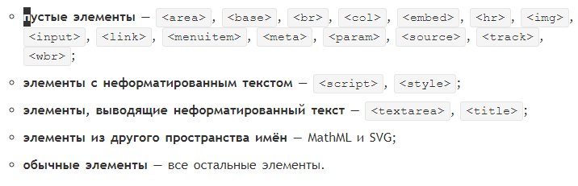

Html And Css
Html
Css
CSS - Cascading Style Sheets
'.', '#' и др. это - селекторы (selectors). (от анл. select - выбрать).
Стандартные ситуации выбора
- Body - единственный уникальный элемент в html. Стилизация body работает на всю страницу.
body {}
- бывает необходимость выделить все параграфы
p {}
- Необходимо выделить несколько параграфов одного типа
задать тип параграфа при помощи аттрибута "class", напрример class=comment
p.comment {}
- Выделить один уникальный параграф
задать уникальное имя при помощи id, например id=someunique
#someunique {}
- Выделить любой элемент, относящцйся к определенному типу (класс)
h1 class = class1
p class = class1
.class1 {}
1. Сделать background страницы - серым.
2. Сделать все параграфы (в отличие от ul, ol, h1 и др.) - синим.
3. Сделать все парагра - коментарии - зеленым.
4. Слелать параграф для слайдера - красным.
Тег area
Представляет собой гиперссылку с текстом, соответствующей определенной области на карте-изображении или активную область внутри карты-изображения. Всегда вложен внутрь тега map.
map name="Navigation"
area shape="poly" coords="560,24,615,24,639,0,585,0" href="misk.html" alt="Разное"
map
Область заполнения
share это форма гиперссылки.
poly - полигон(многоугольник).
circle - окружность.
rect - прямоугольная область.
Кординаты

Для каждой области нужны свои Кординаты:
Для круга точка центра и радиус,
Для многоугольника точки всех углов,
Для прямоугольника точки верхнего левого угла и противоположного.
Href - ссылка на файл который вам нужен
Можно ли обойтись без p и li
Можно, но структура документа будет иметь 1) плохую читаемость (и редактируемость) для разработчика
и будет хуже влиять на место сайта в поиске.
Что такое поисковая оптимизация (SEO)
Стоит ли делать большой Title?
Да, ведь это кодовые слова по которым сайт будет легко найти

Тег <base"
Как работает тег base
Элемент <base" определен внутри контейнера head и инструктирует браузер относительно полного
базового адреса текущего документа. Тег <base" предназначен для документов, в которых используется
относительный адрес и эти документы могут переноситься в другую папку или даже на другой компьютер
без потери связи. Браузер ищет тег <base", определяет полный адрес документа и корректно загружает его.
Например, если адрес документа указан как base href="http://www.megasite.ru/hzchd/", то при добавлении
рисунков достаточно использовать относительный адрес img src="images/labuda.gif".

Тег <col"
Тег <col" задает ширину и другие характеристики одной или нескольких колонок таблицы. При наличии этого тега браузер начинает показывать содержимое таблицы, не дожидаясь ее полной загрузки. Тег col можно использовать совместно с тегом colgroup, который задает группу колонок, обладающих общими характеристиками.
Как поставить видео на сайт с ютуба
- Сначало нужно зарегиться в ютуб
- Потом находим видео
- Нажимаем поделиться
- Потом нажимаем встроить
- Просто копируем код
- И вставляем его туда куда надо

Как отображать скобки html на сайте
Есть 2 вида скобок:
- Открывающие скобки - <
- И закрывающие скобки - "
Чтобы написать открывающую скобку, нужно написать - <(здесь в конце должна быть ;)
Чтобы написать закрывающую скобку, нужно написать - "(здесь в конце должна быть ;)